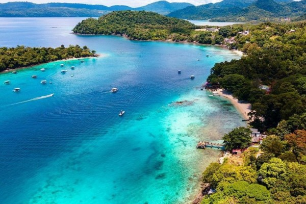

Tentang Pulau Weh
Pulau Weh adalah pulau kecil yang terletak di ujung barat Indonesia, tepatnya di Provinsi Aceh. Pulau ini dikenal karena pantainya yang bersih, air lautnya yang jernih, dan dunia bawah laut yang masih sangat alami.
Pulau Weh menjadi tempat yang populer bagi para wisatawan yang suka menyelam atau snorkeling, karena keindahan terumbu karangnya dan kehidupan laut yang sangat beragam. Di sini, Anda juga dapat menikmati pemandangan matahari terbenam yang memukau serta suasana yang tenang dan damai, jauh dari hiruk-pikuk kota.
Aktivitas yang Dapat Dilakukan
- Snorkeling di Pulau Rubiah untuk menikmati keindahan terumbu karang dan ikan-ikan tropis.
- Menyelam di beberapa titik yang terkenal dengan kedalaman yang ideal untuk melihat kehidupan laut yang beragam.
- Menikmati keindahan pantai dengan pasir putih yang lembut dan air laut yang jernih.
- Berjalan-jalan di sekitar pulau dan menikmati udara segar serta pemandangan alam yang asri.